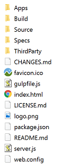
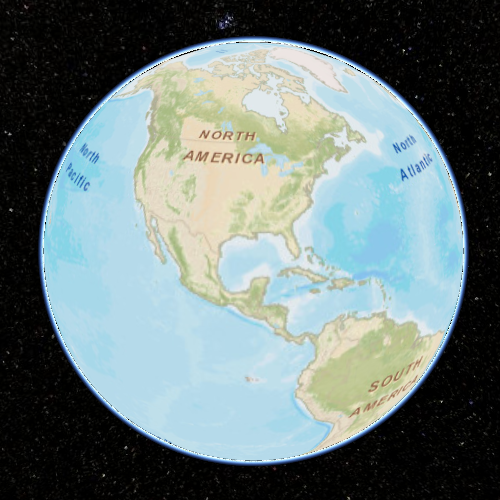
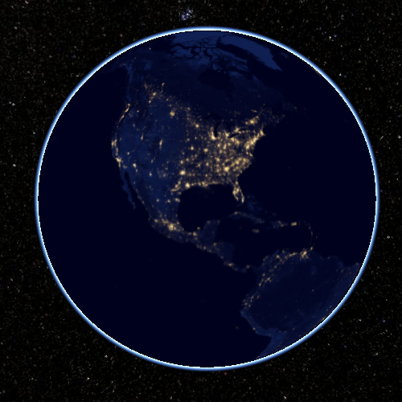
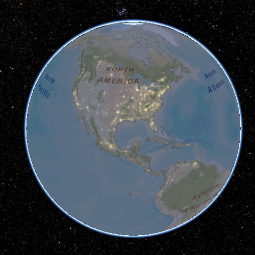
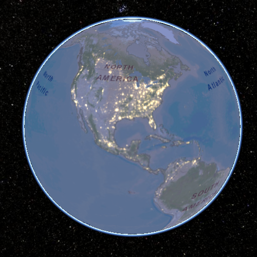
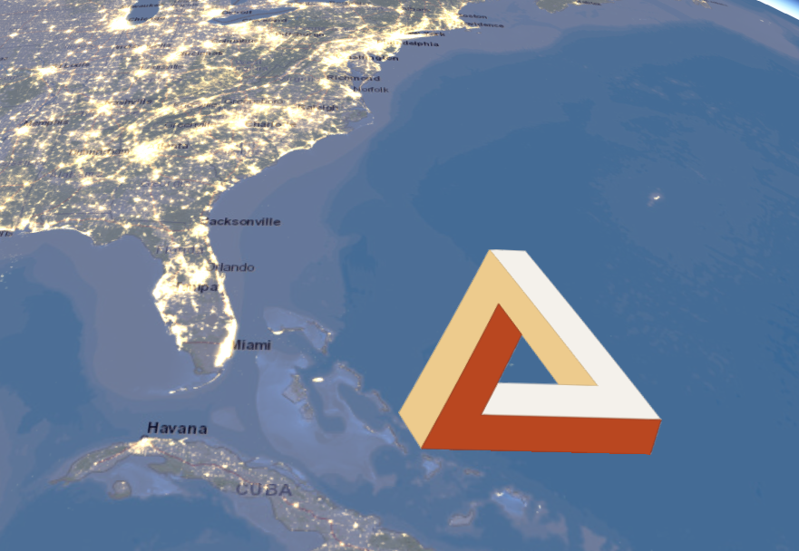

3D Web Mapping II: Cesium.js
Winter 2017 | Geography 371 | Geovisualization: Web Mapping
Instructor: Bo Zhao | TA: Andy Wilson | Location: 235 Wilkinson | Time: Friday 2-2:50pm
Learning Objectives
- Get to know the virtual globe library Cesium.js;
- Make a virtual globe application using cesium.js; and
- overlay different map service providers.
1. Intro to Cesium.js
Cesium is an open-source JavaScript library for world-class 3D globes and maps. It creates the leading 3D globe and map for static and time-dynamic content, with the best possible performance, precision, visual quality, platform support, community, and ease of use.

Cesium was founded by AGI (AGI) in 2011 as a cross-platform virtual globe for dynamic-data visualization in the space and defense industries. Since then, Cesium has grown into a 3D globe serving industries from geospatial and oil and gas to agriculture, real estate, entertainment, and sports. Currently, Cesium is lead by the Cesium Consortium, started by Analytical Graphics, Inc. and Bentley Systems. The consortium was started to accelerate open-source Cesium development and support long-term open-source Cesium sustainability.
AGI uses Cesium in many of its own applications, such as ComSpOC and NORAD Tracks Santa, and develops value-add products for Cesium including the STK Terrain Server.
1.1 Open Standards and Formats
A number of open 3D geospatial formats have grown out of Cesium. Open formats create interoperability for a full ecosystem of tools.
CZML, the Cesium Language, is a JSON schema for describing time-dynamic 3D scenes such as of satellites and aircraft. The quantized-meshformat enables efficient 3D terrain streaming and rendering. The Cesium team has worked closely with Khronos to create glTF, the GL Transmission Format, which is the open-standard runtime asset format for WebGL engines. 3D Tiles are a specification for streaming massive heterogeneous 3D geospatial datasets.
1.2 Dynamic Geospatial Visualization

- Visualize high-resolution global terrain.
- Layer imagery from multiple sources, including WMS, TMS, WMTS, Bing Maps, Mapbox, Google Earth Enterprise, OpenStreetMap, ArcGIS MapServer, standard image files, and custom tiling schemes. Each layer can be alpha-blended with the layers below it, and its brightness, contrast, gamma, hue, and saturation can be dynamically changed.
- Industry standard vector formats, such as KML, GeoJSON, and TopoJSON, including terrain clamping.
- Draw 3D models using glTF with animations and skins. Clamp models to terrain. Convert COLLADA and OBJ to glTF using the online converter. Use KHR_binary_glTF and WEB3D_quantized_attributes extensions to reduce the file size.
- Create data-driven time-dynamic scenes using CZML.
- Draw and style a wide range of geometries:
- Shadows, including self-shadows and soft-shadows for terrain, 3D models, and geometries, based on the sun position.
- Draw the atmosphere, fog, sun, sun lighting, moon, stars, and water.
- Individual object picking.
- Camera navigation with mouse and touch handlers for rotate, zoom, pan with inertia, flights, free look, and terrain collision detection.
- Batching, culling, and JavaScript and GPU optimizations for performance.
- Precision handling for large view distances (avoiding z-fighting) and large world coordinates (avoiding jitter).
- A 3D globe, 2D map, and Columbus view (2.5D) with the same API.
- Display military symbology, such as MIL-STD-2525 and STANAG APP6, by integrating with milsymbol
- Cluster points, labels and billboards.
1.3 Widgets
- Timeline and animation widgets for controlling simulation time.
- Base layer picker widget for selecting imagery and terrain.
- Selection and info box widgets for highlighting objects and displaying information.
- Geocoder widget for flying to addresses and landmarks.
- Home view widget to fly to the default camera view.
- Scene mode picker widget to morph between 3D, 2D, and Columbus view.
- Fullscreen widget for toggling fullscreen mode.
- Navigation help widget for providing mouse and touch instructions.
- Performance watch dog for monitoring the frame rate.
- Inspector widget for advanced graphics debugging.
- WebVR widget for viewing Cesium with VR devices like Google Cardboard.
1.4 High-Precision Math and Time
- Reference frames such as World Geodetic System (WGS84), International Celestial Reference Frame (ICRF), and east-north-up.
- Equidistant Cylindrical and Mercator 2D map projections.
- Conversions such as longitude/latitude/height to Cartesian.
- Fast Cartesian, spherical, cartographic, matrix, and quaternion types.
- Julian dates, leap seconds, and UTC and TAI time standards.
2. The first virtual globe
2.1 Making sure that your browser is Cesium-ready
The easiest way to verify that Cesium works in your web browser is to run the Hello World example by clicking here (opens a new window). If you see something like the below image, congratulations, your system can run Cesium and you can safely skip to the next section; otherwise, continue reading.

Cesium is built on several new HTML5 technologies, the most important of which is WebGL. Even though these new standards are quickly becoming widely adopted, some browsers and systems need to be updated to support them. If the example application doesn’t work for you, here are a few things to try.
- Update your web browser. Most of the Cesium team uses Google Chrome, but Firefox, Internet Explorer 11, and Opera will also work. If you’re already using one of the above browsers, make sure it’s updated to the latest version.
- Update your video card driver to better support 3D. If you know what type of video card you have, you can check the vendor web site for updates. The three most popular are: Nvidia, AMD, and Intel.
- If you’re still having problems, try visiting http://get.webgl.org/, which offers additional trouble-shooting advice. You can also ask for help on the Cesium forum.
2.2 Downloading a Cesium release
Download the latest version of Cesium.js from http://cesiumjs.org/releases/Cesium-1.30.zip. Each Cesium release contains:
- The HTML reference documentation, located in the Build/Documentation directory.
- Cesium.js and all required dependencies, located in the Build/Cesium directory.
- Asynchronous Module Definition (AMD) modules, located in Source.
- HelloWorld.html, the simplest possible Cesium application, loaded in Apps/HelloWorld.html.
- Cesium Viewer, a simple reference application, at Apps/CesiumViewer.
- Cesium Sandcastle, a live code editor and example gallery, at Apps/Sandcastle.
- A Node.js-based development server for getting up and running quickly.
Once downloaded, extract the zip file into a new directory of your choice, I’ll refer to this throughout the tutorial as the Cesium root directory. The contents should look something like the below.

It may be tempting to double-click on index.html, but we’ll only be greeted with disappointment. In order for the application to actually work, it needs to run within a web server. To host the files as a web environment, you can import the directory in WebStorm or open the python SimpleHTTPServer. Cesium has no server requirements; it is completely client side. This means any web server that can host static content can also host Cesium.
AخA1$python -m SimpleHTTPServerYou could also setup up a web server with Node.js. It takes 3 steps.
- Install Node.js from their website, you can use the default install settings.
- Open a command shell in the Cesium root directory and download/install the required modules by executing
npm install. This will create a ‘node_modules’ directory in the root directory. - Finally, start your web server by executing
node server.jsin the root directory.
2.3 Hello world!
Now that we have a web server up and running, we can launch a browser and navigate to . This is the same Hello World application we used to test WebGL at the beginning of the tutorial, but now it’s running on your own system instead of the Cesium website. If we open up HelloWorld.html in an editor, we’ll find the following simple application.
xxxxxxxxxx251<html lang="en">3<head>4 <!-- Use correct character set. -->5 <meta charset="utf-8">6 <!-- Tell IE to use the latest, best version. -->7 <meta http-equiv="X-UA-Compatible" content="IE=edge">8 <!-- Make the application on mobile take up the full browser screen and disable user scaling. -->9 <meta name="viewport" content="width=device-width, initial-scale=1, maximum-scale=1, minimum-scale=1, user-scalable=no">10 <title>Hello World!</title>11 <script src="../Build/Cesium/Cesium.js"></script>12 <style>13 @import url(../Build/Cesium/Widgets/widgets.css);14 html, body, #cesiumContainer {15 width: 100%; height: 100%; margin: 0; padding: 0; overflow: hidden;16 }17 </style>18</head>19<body>20 <div id="cesiumContainer"></div>21 <script>22 var viewer = new Cesium.Viewer('cesiumContainer');23 </script>24</body>25</html>These are the four lines needed to add Cesium to an application:
The first step is to include Cesium.js in a script tag. This defines the Cesium object, which contains everything we need.
xxxxxxxxxx11 <script src="../Build/Cesium/Cesium.js"></script>In order to use the Cesium Viewer widget, we need to include its CSS.
xxxxxxxxxx11 @import url(../Build/Cesium/Widgets/widgets.css);In the HTML body, we create a div for the viewer to live.
xxxxxxxxxx11 <div id="cesiumContainer"></div>Finally, we create an instance of viewer.
xxxxxxxxxx11 var viewer = new Cesium.Viewer('cesiumContainer');2.4 Imagery Layers
Cesium supports drawing and layering high-resolution imagery (maps) from several standard services. Layers can be ordered, and blended together. Each layer’s brightness, contrast, gamma, hue, and saturation can be dynamically changed. This tutorial introduces imagery layer concepts and the related Cesium APIs.
Let’s ignore the details for the moment and just jump in by writing code to add a few imagery layers. Open the index.html in the root directory of this lecture. This example creates a Viewer widget which, which, by default, has a single layer rendering Bing Maps imagery. We can specify a different base layer by providing an additional parameter to the Viewer constructor. Let’s use a layer from an Esri ArcGIS MapServer:
xxxxxxxxxx61var viewer = new Cesium.Viewer('cesiumContainer', {2 imageryProvider : new Cesium.ArcGisMapServerImageryProvider({3 url : 'http://server.arcgisonline.com/ArcGIS/rest/services/World_Street_Map/MapServer'4 }),5 baseLayerPicker : false6});After modifying the example, visit it at http://localhost:8000/index.html, please make sure you have the root directory of this lecture hosted by python SimpleHTTPServer.

We can zoom in and out, and the layer streams in as needed.
Next, add another layer: NASA Black Marble imagery available using Tile Map Service (TMS):
xxxxxxxxxx61var layers = viewer.scene.imageryLayers;2var blackMarble = layers.addImageryProvider(new Cesium.TileMapServiceImageryProvider({3 url : '//cesiumjs.org/tilesets/imagery/blackmarble',4 maximumLevel : 8,5 credit : 'Black Marble imagery courtesy NASA Earth Observatory'6}));
Since it was added last and covers the full extent of the globe, the Black Marble layer covers up the Esri layer. We could move Black Marble to the bottom with layers.lower(blackMarble);, but instead let’s blend it with the Esri layer so we have a better sense of how the two layers relate:
xxxxxxxxxx11blackMarble.alpha = 0.5; // 0.0 is transparent. 1.0 is opaque.
Next, increase the brightness of the lights:

xxxxxxxxxx11blackMarble.brightness = 2.0; // > 1.0 increases brightness. < 1.0 decreases.To finish, add a third layer that draws a single image over a particular extent.

xxxxxxxxxx41layers.addImageryProvider(new Cesium.SingleTileImageryProvider({2 url : 'img/logo-bg.jpg',3 rectangle : Cesium.Rectangle.fromDegrees(-75.0, 23.0, -67.0, 29.75)4}));The complete code is:
x1var viewer = new Cesium.Viewer('cesiumContainer', {2 imageryProvider : new Cesium.ArcGisMapServerImageryProvider({3 url : 'http://server.arcgisonline.com/ArcGIS/rest/services/World_Street_Map/MapServer'4 }),5 baseLayerPicker : false6});78var layers = viewer.scene.imageryLayers;9var blackMarble = layers.addImageryProvider(new Cesium.TileMapServiceImageryProvider({10 url : 'http://cesiumjs.org/tilesets/imagery/blackmarble',11 maximumLevel : 8,12 credit : 'Black Marble imagery courtesy NASA Earth Observatory'13}));1415blackMarble.alpha = 0.5; // 0.0 is transparent. 1.0 is opaque.1617blackMarble.brightness = 2.0; // > 1.0 increases brightness. < 1.0 decreases.1819layers.addImageryProvider(new Cesium.SingleTileImageryProvider({20 url : 'img/logo-bg.jpg',21 rectangle : Cesium.Rectangle.fromDegrees(-75.0, 23.0, -67.0, 29.75)22}));2.5 Imagery providers
High-resolution imagery like the first two layers used above is too large to fit into memory or often even a single disk, so imagery is divided into smaller images, called tiles, that can be streamed to a client as needed based on the view. Cesium supports several standards for requesting tiles using imagery providers. Most imagery providers use a REST interface over HTTP to request tiles. Imagery providers differ based on how requests are formatted and how tiles are organized. Cesium has the following imagery providers:
- Web Map Service (WMS) - An OGC standard for requesting map tiles for a geographic region from distributed geospatial databases. In Cesium, see WebMapServiceImageryProvider.
- Tile Map Service (TMS) - A REST interface for accessing map tiles. Tiles can be generated with MapTiler or GDAL2Tiles. In Cesium, see TileMapServiceImageryProvider.
- OpenGIS Web Map Tile Service (WMTS) - An OGC standard for serving pre-rendered georeferenced map tiles over the Internet. In Cesium, see WebMapServiceImageryProvider.
- OpenStreetMap - Access to OpenStreetMap tiles or any Slippy map tiles. There are several ways to host these tiles. In Cesium, see createOpenStreetMapImageryProvider.
- Bing Maps - Uses Bing Maps REST Services to access tiles. A Bing Maps key can be created at https://www.bingmapsportal.com/. In Cesium, see BingMapsImageryProvider.
- Esri ArcGIS MapServer - Uses the ArcGIS Server REST API to access tiles hosted by an ArcGIS MapServer. In Cesium, see ArcGisMapServerImageryProvider.
- Google Earth Enterprise - Provides access to the imagery stored in your organization’s Google Earth Enterprise server. In Cesium, see GoogleEarthImageryProvider.
- Mapbox - Uses the Mapbox API to access tiles. Create an account and supply your access token. In Cesium, see MapboxImageryProvider.
- Standard image files - Create a tile from a single image. In Cesium, see SingleTileImageryProvider.
- Custom tiling schemes - Using UrlTemplateImageryProvider, we can connect to a wide array of imagery sources by using a URL template. For example, a URL template for TMS is
//cesiumjs.org/tilesets/imagery/naturalearthii/{z}/{x}/{reverseY}.jpg. - Tile coordinates - Shows how the globe is divided into tiles in a particular tiling scheme by drawing a border around each tile and labeling it with its level, X, and Y coordinates.
We can access other imagery services by implementing the ImageryProvider interface. If you do so, and think it is generally useful, please contribute it to Cesium for everyone’s benefit.
See the reference documentation for how to construct a particular imagery provider. We’ll look at the SingleTileImageryProvider here since many imagery providers share its construction properties:
url- The url to the image. Like many imagery providers, this is the only required property. In other imagery providers this url points to the server or the root url of the service.extent- An optional longitude-latitude rectangle that the image should cover. The default is to cover the entire globe.credit- An optional string crediting the data source, which is displayed on the canvas. Some imagery providers, like BingMapsImageryProvider and ArcGIS Server REST API, get a credit logo or string directly from their service.proxy- An optional proxy to use for requests to the service, which brings us to Cross-Origin Resource Sharing.
Imagery providers vs. layers
So far we haven’t clearly differentiated between imagery providers and layers. An imagery provider makes requests for tiles using a particular service, while a layer represents displayed tiles from an imagery provider. Code like
xxxxxxxxxx11var layer = layers.addImageryProvider(imageryProvider);is shorthand for
xxxxxxxxxx21var layer = new ImageryLayer(imageryProvider);2layers.add(layer);We usually construct an imagery provider just to create a layer, then we manipulate the layer to change its visual appearance using its properties like show, alpha, brightness, and contrast. See ImageryLayer. Decoupling imagery providers and layers makes it easier to write new imagery providers.
An imagery layer collection, like layers in the above examples, determines the order in which layers are drawn. Layers are drawn bottom-to-top based on the order they are added. Imagery layer collections are manipulated like any other collection in Cesium using functions like add, remove, and get. In addition, layers can be reordered using raise, raiseToTop, lower, and lowerToBottom. See ImageryLayerCollection.
Cross-origin resource sharing
As a security measure, today’s web browsers take pains to prevent Javascript code from reading the pixels of an image that comes from a different site. In particular, WebGL applications like Cesium are forbidden from using images as textures if those images - imagery tiles in our case - come from a different host name or port and the server does not explicitly allow the images to be used in this way. The server indicates that the images do not contain confidential information, and it is therefore safe for other sites to read their pixels, by including Cross-Origin Resource Sharing (CORS) headers in the HTTP response.
Unfortunately, not all imagery services support CORS. For those that don’t, a proxy server at the same origin as the website hosting Cesium must be used. When using such a proxy, tiles appear to the web browser and the Cesium client as if they came from the same origin as the Cesium-based website. To use a proxy with an imagery provider, use the proxy property when constructing the imagery provider. Cesium includes a simple proxy written in Node.js for development purposes.
xxxxxxxxxx41layers.addImageryProvider(new Cesium.ArcGisMapServerImageryProvider({2 url : 'http://server.arcgisonline.com/ArcGIS/rest/services/World_Street_Map/MapServer',3 proxy : new Cesium.DefaultProxy('/proxy/')4}));